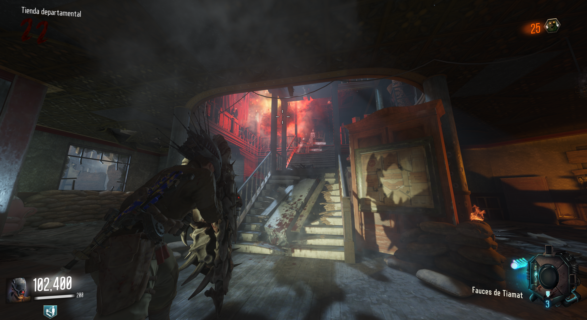
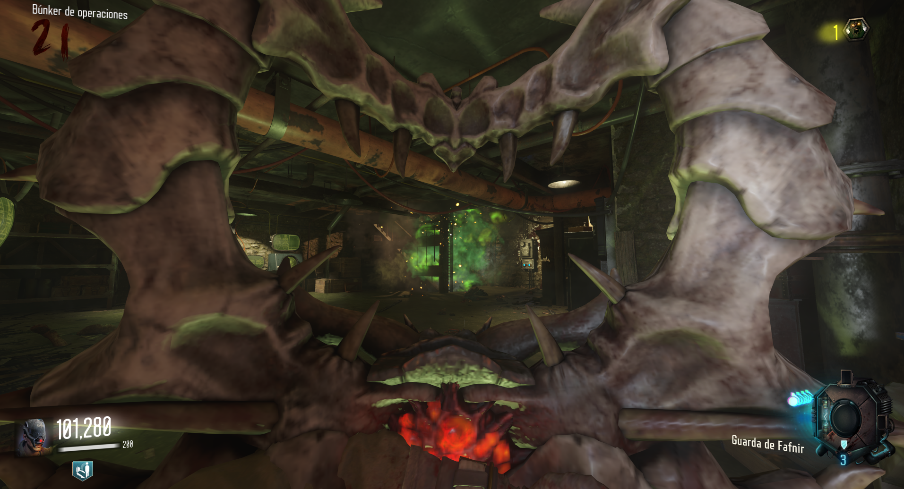
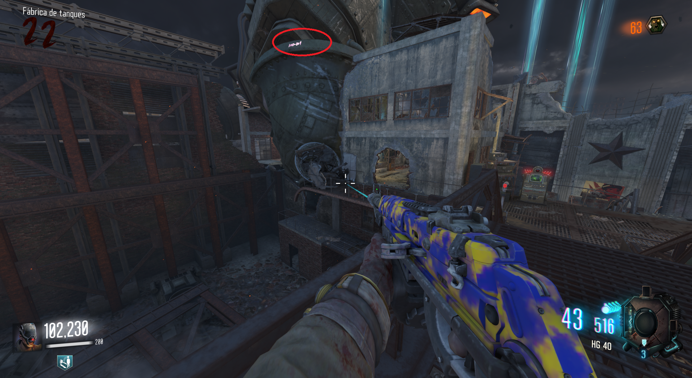
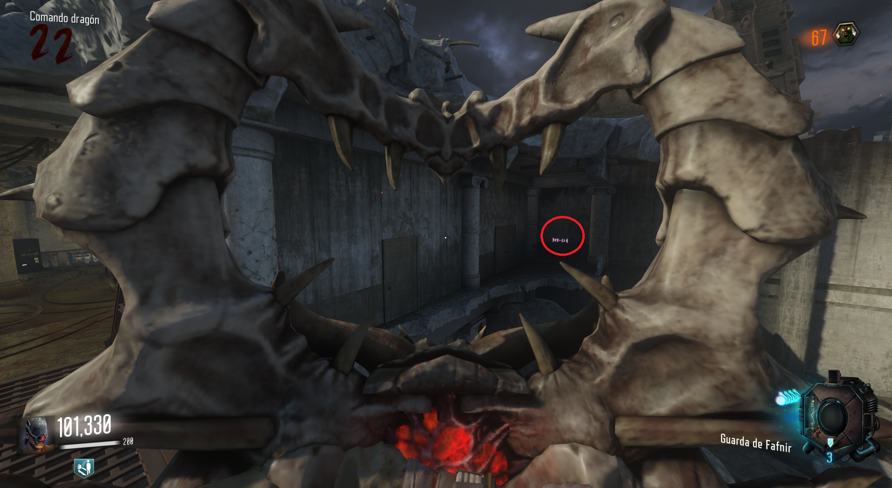
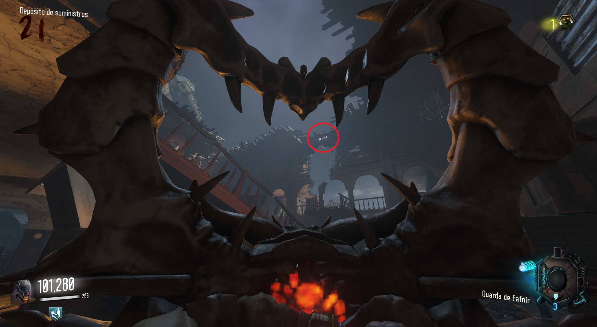
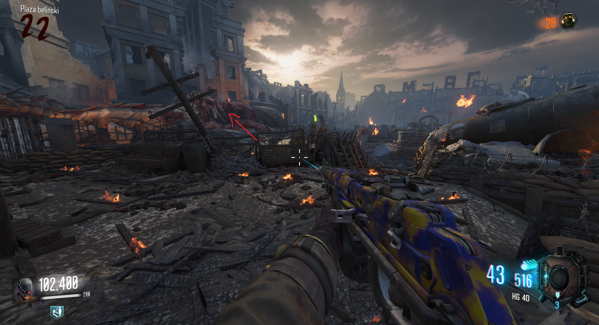
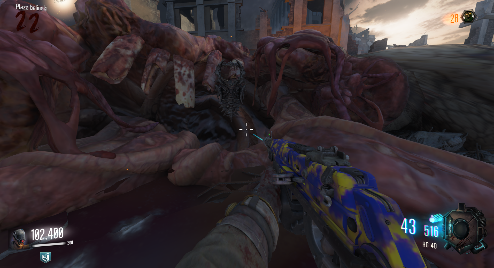

Mejorar escudo (Gorod Krovi)

Cómo obternerlo:
Mataremos unos 40-50 zombies con el escudo (CaC o con el ataque de fuego verde) hasta que escuchemos un sonido de campana.

Después iremos a las tres ubicaciones donde podemos llamar al dragón y con el ataque de fuego verde del escudo dispararemos a unas letras.
Ubicaciones:



Después esperaremos a que el dragón dispare fuego en una zona y ,equipados con el escudo, deberemos permanecer en el fuego hasta que desaparezca.
Si lo hacemos bien, volveremos al Spawn e interactuaremos con el dragón muerto.

Nos cambiará el escudo de Guarda de Fafnir por el escudo Fauces de Tiamat.
